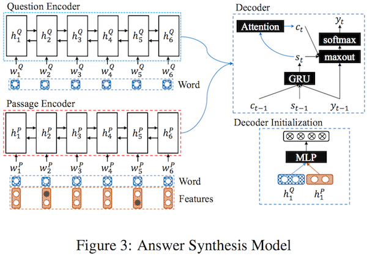

S-NET: Extract and Generate
Updated:
The S-Net [1] based on the R-Net [2] tries to tackle the open-domain QA problem just like the Reading Wikipedia to Answer Open-Domain Questions does. the S-Net decomposes the problem into two problems, Evidence Extraction and Answer Synthesis namely.
Motivation
In the SQuAD dataset there is a constraint that words to answer questions are all provided in passages. Specifically, the answer is a span of words in the corresponding passage. So most works leverage the Pointer Network to predict the start point and end point of the answer in a passage. This is not the case of reality. Datasets like MS-MARCO and DuReader removes this constraint. They provide several passages for each question and the answer is generated by the human. So the answer may not be a span in a passage or not necessarily use any word in provided passages. They proposed an extraction-then-synthesis framework.
Model
Evidence Snippet Prediction
This evidence extraction model is treated as a multi-task learning model. It not only learns text spans of evidence but also learns to rank passage candidates. This model is alike their previous work R-NET. For a question $Q=|w^{Q}_{t}|^{m}_{t=1}$ and a passage $P=|w^{P}_{t}|^{n}_{t=1}$, all words are encoded through word embedding and character embedding. The final hidden state of a bi-directional GRU applied to charaters is used as the character embedding of corresponding word. By concatenating the two forms of embeddings ( $e$ and $char$ ) and puting them into another bi-directional GRU, a new representation of words $u^Q_i$ (for question) and $u^P_j$ (for passage) is obtained.
$$
u^Q_t = \mbox{BiGRU}_{Q}(u^Q_{t-1},[e^Q_t,char^{Q}_{t}]) \\
u^P_t = \mbox{BiGRU}_{P}(u^P_{t-1},[e^P_t,char^{P}_{t}])
$$
Then a SeqMatchSeq like model is used to mix up question and passage. At step $t$, first the context vector $c^{Q}_{t}$ is calculated as below
$$
s^{t}_{j} = v^{T}\mbox{tanh}(W^{Q}_{u}u^{Q}_{j}+W^{P}_{u}u^{P}_{t}) \\
a^{t}_{i} = \exp (s^{t}_{i}) / \sum^{m}_{j=1}\exp(s^{t}_{j}) \\
c^{Q}_{t} = \sum^{m}_{i=1} a^{t}_{i} u^{Q}_{t}
$$
Next, concatenate context vector $c^{Q}_{t}$ and current passage word $u^{P}_{t}$ and compute a gate $g_t$ to determine how much information will be used.
$$
g_t = \sigma (W_g[u^{P}_{t},c^{Q}_{t}]) \\
[u^{P}_{t},c^{Q}_{t}]^{*} = g_t \odot [u^{P}_{t},c^{Q}_{t}] \\
v^{P}_{t} = \mbox{GRU}(v^{P}_{t-1},[u^{P}_{t},c^{Q}_{t}]^{*})
$$
Concatenate the new representation of all passage, and compute the pointers for start position $p^1$ and end position $p^2$
$$
s^{t}_{j} = v^{T}\mbox{tanh}(W^{P}_{h}u^{P}_{j}+W^{a}_{h}h^{a}_{t-1}) \\
a^{t}_{i} = \exp (s^{t}_{i}) / \sum^{N}_{j=1}\exp(s^{t}_{j}) \\
p^t = \mbox{argmax}(a^{t}_{1},…,a^{t}_{N})
$$
where $h^{a}_{t-1}$ represents the last hidden state of the pointer network. For the initial hidden state, it is computed as
$$
s_{j} = v^{T}\mbox{tanh}(W^{Q}_{u}u^{Q}_{j}+W^{Q}_{v}v^{Q}_{r}) \\
a_{i} = \exp (s_{i}) / \sum^{N}_{j=1}\exp(s_{j}) \\
r^{Q} = \sum^{m}_{i=1} a_{i}u^{Q}_{i}
$$
where $v^{Q}_{r}$ is a parameter to learn. For other hidden states, they are obtained as
$$
c_{t} = \sum^{N}_{i=1}a^{t}_{i}v^{P}_{i} \\
h^{a}_{t} = \mbox{GRU}(h^{a}_{t-1},c_{t})
$$
Another task in this model is passage ranking. To get the passage representation $r^{P}$, attention mechanism is adopted once more:
$$
s_{j} = v^{T}\mbox{tanh}(W^{P}_{v}v^{P}_{j}+W^{Q}_{v}r^{Q}) \\
a_{i} = \exp (s_{i}) / \sum^{N}_{j=1}\exp(s_{j}) \\
r^{P} = \sum^{n}_{i=1} a_{i}v^{P}_{i}
$$
Using $r^{P}$ and $r^{Q}$, the matching score is calculated as
$$
g = v^{T}_{g}(\mbox{tanh}(W_g[r^{Q},r^{P}]))
$$
Answer Synthesis
This answer synthesis model is a typical Seq2Seq model with attention. The encoder leverages the information extracted from the evidence extraction model by combining basic word embedding $e^{p}_{t}$ with $f^{s}_{t}$ and $f^{e}_{t}$ which indicates the start and end positions of evidence snippet respectively. The encoded questions and answers are
$$
h^{P}_{t} = \mbox{BiGRU}(h^{P}_{t-1},[e^{p}_{t},f^{s}_{t},f^{e}_{t}]) \\
h^{Q}_{t} = \mbox{BiGRU}(h^{Q}_{t-1},e^{Q}_{t})
$$
The decoder generates the decoding hidden state $d_{t}$ at $t$ by
$$
d_{t} = \mbox{GRU}(w_{t-1},c_{t-1},d_{t-1}) \\
d_{0} = \mbox{tanh}(W_{d} [h^{P}_{1},h^{Q}_{1}] + b)
$$
where $h^{P}_{1}$ and $h^{Q}_{1}$ are the last backward encoder hidden states with repsect to passage and question. $w_{t}$ is the previous decoding word embedding. The context vector $c_{t}$ is obtained by matching current decoder state $d_{t}$ with each encoder hidden state $h_{t}$ which consists of the $h^{P}_{t}$ and $h^{Q}_{t}$ (not sure how they mix these two)
$$
s^{t}_{j} = v^{T}_{a} \mbox{tanh} (W_{a}d_{t-1} + U_{a}h_{j}) \\
a^{t}_{i} = \exp (s^{t}_{i}) / \sum^{n}_{j=1}\exp(s^{t}_{j}) \\
c_{t} = \sum^{n}_{i=1}a^{t}_{i}h_{i}
$$
Now, construct readout state $r_t$, put it through a maxout hidden layer and predict decoding word $y_{t}$
$$
r_t = W_rw_{t-1} + U_{r}c_{t} + V_{r}d_{t} \\
m_t = [\mbox{max}(r_{t,2j-1},r_{t,2j})]^T \\
p(y_{t}|y_{1},…y_{t-1}) = \mbox{softmax}(W_{o}m_t)
$$

Optimization
Evidence Snippet Prediction
For the evidence snippet predction task, the target is to get the start and end indexes right. This objective can be expressed by cross entropy
$$
L_{AP} = - \sum^{2}_{t=1} \sum^{N}_{i=1} [ y^{t}_{i} \log a^{t}_{i} + (1 - y^{t}_{i}) \log (1-a^{t}_{i}) ]
$$
where $y^{t}_{i}$ is a index function.
And for the page ranking task, the goal is to make the correct passages have higher scores. Similiarly, the objective function is
$$
\hat{g}_{i} = \exp (g_{i})/\sum^{k}_{j=1}(g_{i}) \\
L_{PR} = - \sum^{k}_{i=1} [ y_{i} \log \hat{g}_{i} + (1 - y_{i}) \log (1-\hat{g}_{i}) ]
$$
Combine two objective functions, We have
$$
L_{E} = r L_{AP} + (1-r) L_{PR}
$$
Answer Synthesis
The goal in answer synthesis model is to maximize the likelike of answer $Y$ given the question and related passages $Y$
$$
L_{S} = -\frac{1}{|D|} \sum_{(X,Y) \in D} \log(Y|X)
$$
Experimental Setting
Evidence Snippet Prediction
- Choose the span with the highest ROUGE-L score with the reference answer as the gold span in the training. Only use the data whose ROUGE-L score of chosen text span is higher than 0.7 (86.74% training data).
- 300-dimensional uncased pre-trained GloVe embeddings without update during training.
- Use zero vectors to represent all out-of-vocabulary words.
- Hidden vector length is set to 150.
- Dropout rate is 0.1.
- Beam search with beam size of 12.
- Thee weight r is set to 0.8.
Answer Synthesis
- Choose the best span with highest ROUGE-L score as the evidence, and use the corresponding reference answer as the output. Only use the data whose ROUGE-L score of chosen evidence snippet is higher than 0.5.
- Apply the evidence extraction model to all training data to obtain the extracted span. (almost double the dataset).
- Use an identical vocabulary set for the input and output whose size is 30,000.
- Word embedding size is 300 and updated during training.
- Feature embedding size of start and end positions of the extracted snippet is 50.
- GRU hidden state sizes is 150.
- Beam search with beam size of 12.
Analysis
The figure below shows that the multi-task framework (jointly learning the answer prediction and the passage ranking) works better than learning the evidence snippet alone. it is way better than passage ranking first and extraction.
An experiment is conducted to compare the extraction and synthesis model. For ROUGE-L score equals 1 (the answer can be found in the passage), the extraction model slightly outperforms the extraction-synthesis model. Both of them are behind the potiential ROUGE-L score.